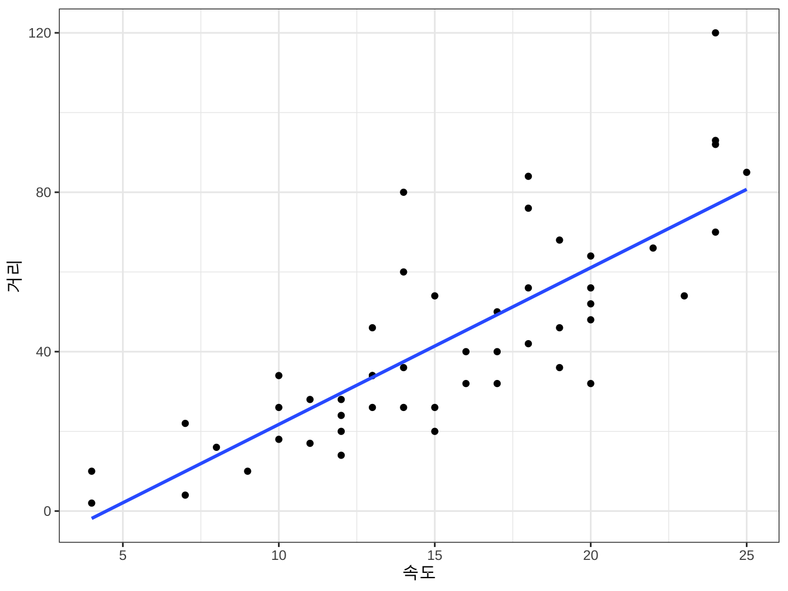
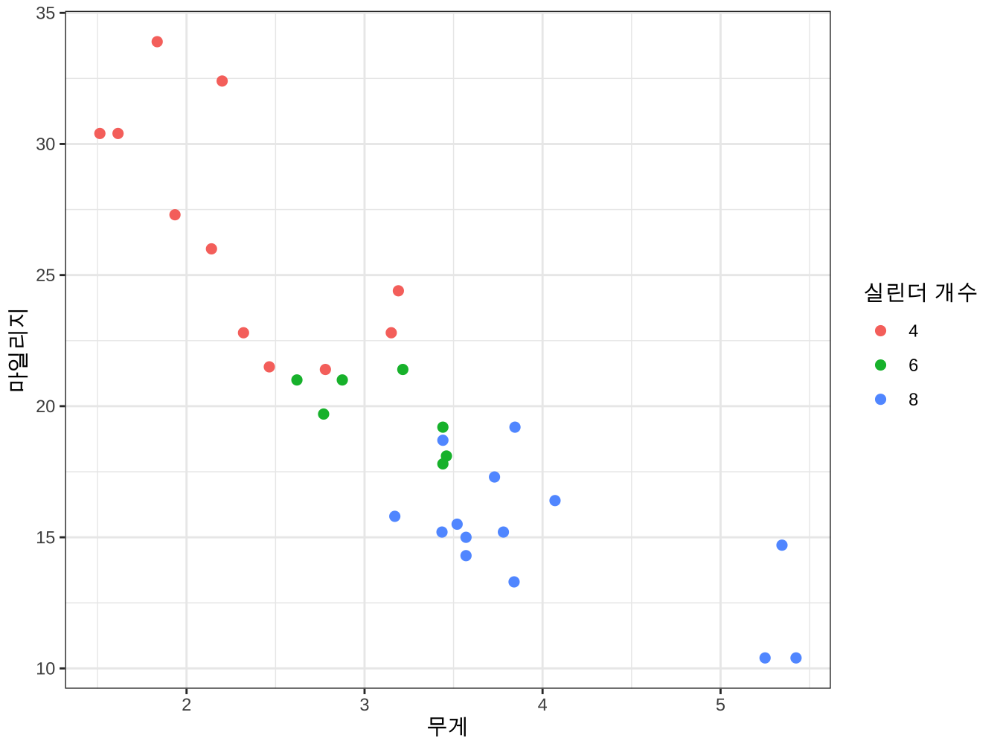
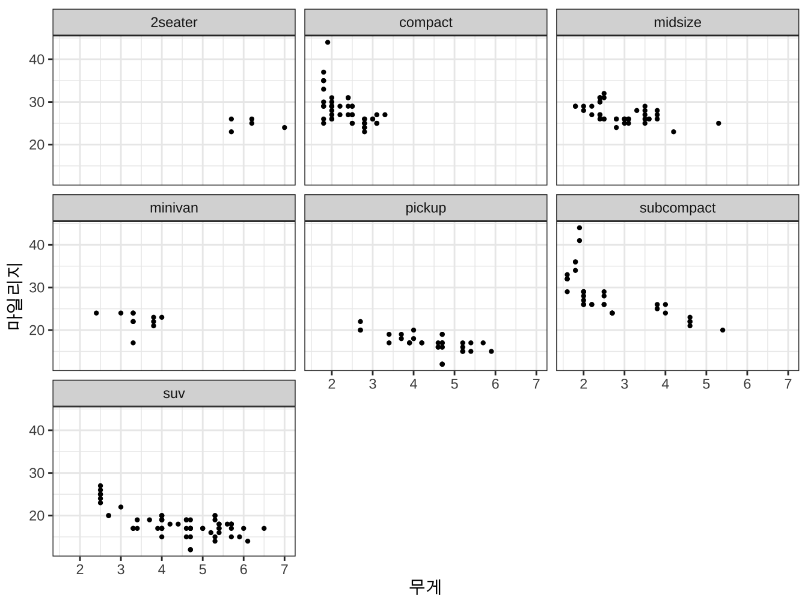

제 3 장 그림
3.1 R 로 생성한 그림
3.1.1 그림 기초
R로 생성된 그림은 다음과 같이 rmarkdown으로 쉽게 나타낼 수 있다. 그림에서 한글이 깨질 수 있으므로 절 5.2 에 나오는 처리를 꼭 해주어야 한다.
그림을 표시하는 경우 중요한 chunk 선택문은 다음과 같다.
out.width='80%': 그림의 크기 조절fig.asp=.75: 높이/폭의 상대적인 비율fig.align='center'그림의 위치fig.cap='그림 제목': 그림의 제목
다음 그림은 다음의 chunk 선택문을 이용한 그림이다.
out.width='80%', fig.asp=.75, fig.align='center', fig.cap='속도와 제동 거리간의 관계'plot(cars, pch = 16, cex = 1.3, col = "blue", xlab = "속도", ylab = "제동거리")
abline(lm(dist ~ speed, data = cars))그림 3.1: 속도와 제동 거리간의 관계
다음 그림은 다음의 chunk 선택문을 이용한 그림이다.
out.width='50%', fig.asp=1.25 , fig.align='left'plot(cars, pch = 16, cex = 1.3, col = "blue", xlab = "속도", ylab = "제동거리")
abline(lm(dist ~ speed, data = cars))그림 3.2: 속도와 제동 거리간의 관계
3.2 그림 화일
화일로 된 그림을 불러오는 방법은 두 가지가 있다. Markdown 명령문을 사용하는 방법과 R 명령문 knitr::include_graphics 을 사용할 수 있다.
참고로 그림 라벨을 지정하거나 크기를 바꾸는 작업은 Markdown 명령문을을 이용하는 것보다 R 명령문 knitr::include_graphics 을 사용하는 것이 더 편리하다.
그림 화일 f35.jpg 이 프로젝트 디렉토리 아래 myimages/ 디렉토리에 저장되어 있다고 하자 (그림출처:https://rokaf.airforce.mil.kr/)
3.2.1 R 명령문의 사용
R 명령문 knitr::include_graphics을 사용하여 그림화일을 불러올 수 있다. 이때 사용되는
중요한 chunk 명령어는 다음과 같다.
out.width="50%": 그림의 크기 조절fig.asp=.75: 높이/폭의 상대적인 비율fig.align='center'그림의 위치fig.cap='그림 제목': 그림의 제목
knitr::include_graphics("myimages/f35.jpg"))knitr::include_graphics("myimages/f35.jpg")그림 3.3: 한국공군 F-35A
3.2.2 Markdown 명령문의 사용
다음과 같은 명령어로 그림을 표시할 수 있다.
{width=50%}한국공군 F-35A
3.3 그림의 참조
그림을 참조하는 경우 chunk 명령문에 사용한 그림 이름 앞에 fig: 를 붙여서 \@ref(fig:figname) 과 같이 참조한다.
예를 들면 그림 3.3 에 나타난 비행기는 한국 공군의 F-35A 이다.
3.4 2개 이상의 그림
하나의 화면에 두 개 이상의 그림을 그리려면 chunk 명령문에 fig.show = 'hold' 을 추가한다.
par(mar = c(4, 4, .1, .1))
knitr::include_graphics("myimages/f35.jpg")
plot(cars, pch = 16, cex = 1.3, col = "blue", xlab="속도", ylab="제동거리")
abline(lm(dist ~ speed, data=cars))그림 3.4: 동시에 두 개의 그림 그리기
다음과 같이 ggplot2 와 plot 함수를 이용하여 2 개의 그림을 같이 그릴 수 있다.
par(mar = c(4, 4, .1, .1))
ggplot(cars, aes(x=speed, y=dist)) + geom_point() + geom_smooth(method = "lm", se = FALSE) + labs(x = "속도", y = "거리") + theme_bw()
plot(cars, pch = 16, cex = 1.3, col = "blue", xlab="속도", ylab="제동거리")
abline(lm(dist ~ speed, data=cars))그림 3.5: ggplot2 와 plot
3.5 패키지 ggplot2 예제
패키지 ggplot2 를 이용한 그림도 다음과 같이 나타낼 수 있다.
ggplot(cars, aes(x = speed, y = dist)) + geom_point() + geom_smooth(method = "lm",
se = FALSE) + labs(x = "속도", y = "거리") + theme_bw()## `geom_smooth()` using formula 'y ~ x'
ggplot(mtcars, aes(wt, mpg)) + geom_point(aes(colour = factor(cyl)), size = 2) +
labs(x = "무게", y = "마일리지", color = "실린더 개수") + theme_bw()
ggplot(mpg, aes(displ, hwy)) + geom_point(size = 0.8) + facet_wrap(vars(class)) +
labs(x = "무게", y = "마일리지") + theme_bw()